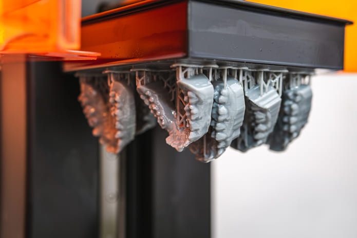

Odontología

Alineadores
Ofrecen un ajuste preciso y un confort superior. Aseguran una adaptación exacta a la estructura dental del paciente.

Modelo Plataforma
Ofrecen una representación precisa de la anatomía bucal del paciente, ideales para diagnóstico, diseño de prótesis o presentación de casos.
Guias Quirurgicas
Facilitan intervenciones como la colocación de implantes dentales, asegurando exactitud en la angulación y profundidad según el plan quirúrgico digital.

Modelo Plataforma
Estos modelos permiten optimizar la producción en clínicas y laboratorios, reduciendo tiempos de trabajo sin comprometer calidad.